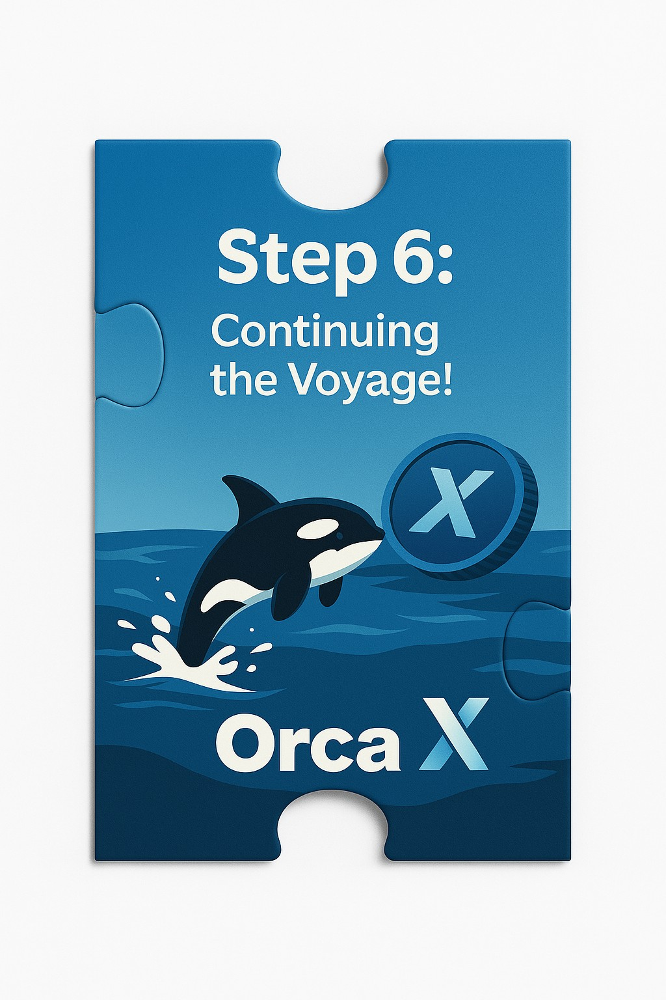

한 발 한 발, 파도를 딛고 미래로
바다는 언제나 일정하지 않습니다.
크고 작은 파도가 우리의 발아래로 밀려옵니다.
그럼에도 불구하고 우리는 한 발 한 발, 확신을 가지고 전진합니다.
OrcaX는 단숨에 도착하는 여정이 아닙니다.
지속적이고, 꾸준한 항해입니다.
그 발걸음 하나하나에 기술의 진보, 커뮤니티의 의지, 비전의 가치가 담겨 있습니다.
미래는 막연한 희망이 아니라,
현재의 발걸음이 만든 구체적 실현입니다.
